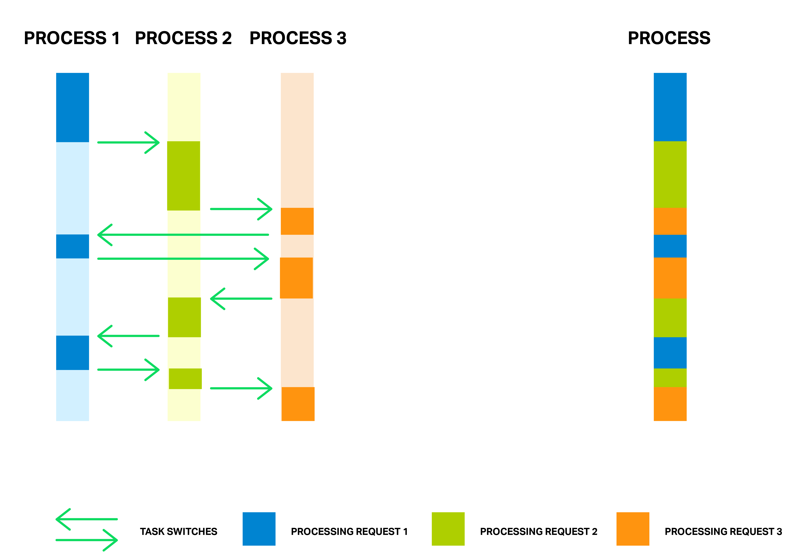
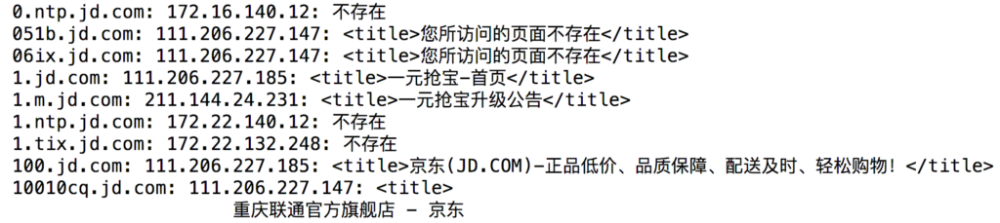

一、简介
为了协助渗透测试信息收集的高效进行，开发一些简易的信息收集工具势在必得，现如今编写的很方便高效的工具有很多，所以编写一个工具不能够仅仅实现自己想要的功能，更重要的是优化工具的扫描速度，本次编写工具的背景针对IO密集型请求，采用异步请求方式。下面我们来看一下简单好用的小工具。
二、简单了解Asyncio异步请求
我们想象一下下面的情景，如果访问1000个域名网站，并且获取每个网站的标题，如果采用非并发式编程，我们将会受到由网络请求速度、程序运行速度等多方面的影响，在等待相应的这段时间里我们并不能充分的利用我们的程序时间。我在本例没有采用多线程、多进程去实现我的程序，主要是想使用异步请求方式练手。异步请求在单线程里使用异步计算, 下载网页的时候和处理网页的时候是不连续的, 更有效利用了等待下载的这段时间。看到网上很多异步请求的参考资料，引用一下前辈的图，在此说明一下多线程与异步请求处理密集型IO操作的区别：

传统的单线程下载处理网页可能就像下图(来源)左边蓝色那样, 计算机执行一些代码, 然后等待下载网页, 下好以后, 再执行一些代码… 或者在等待的时候, 用另外一个线程执行其他的代码, 这是多线程的手段. 那么 asyncio 就像右边, 只使用一个线程, 但是将这些等待时间统统掐掉, 下载应该都调到了后台, 这个时间里, 执行其他异步的功能, 下载好了之后, 再调回来接着往下执行。
三、代码福利
工具由于编写比较迅速，IP查询暂时并不支持全量真实IP查询，后边会完善，运行结果见文章最后。1
2
3
4
5
6
7
8
9
10
11
12
13
14
15
16
17
18
19
20
21
22
23
24
25
26
27
28
29
30
31
32
33
34
35
36
37
38
39
40
41
42
43
44
45
46
47
48
49
50
51
52
53
54
55
56
57
58
59
60
61
62
63
64
65
66
67
68
69
70
71
72
73
74
75
76
77
78
79
80
81
82
83
84
85
86
87
88
89
90
91
92
93
94
95
96
97
98#! /usr/bin/env python
# -*- coding: utf-8 -*-
"""
Date: 2018-07-04
Author: Chensiyu
Readme: Tools domain request
"""
import re
import asyncio
import requests
import socket
import time
import datetime
from datetime import datetime
from aiohttp import ClientSession
class FunnyScan(object):
def __init__(self):
self.s = ""
self.title = ""
self.tasks = []
self.url = []
self._www = "www"
self._http = "http"
self._https = "https"
self.loop = asyncio.get_event_loop()
self.regx = r"<title>[\s\S]*?</title>"
self.file_objects = open('./domain.txt', 'r').readlines()
def getHostByName(self, hostname):
"""
get hostname method
:param hostname:
:return: hostname by ip
"""
try:
result = socket.gethostbyname(hostname)
except Exception as error:
result = "error"
if result == 'error':
regex = hostname.find(self._www)
if regex == -1:
self.s = 'www.' + hostname
try:
result = socket.gethostbyname(self.s)
except Exception as error:
result = "error"
return result
async def hello(self, u):
try:
task = asyncio.ensure_future(self.fetch(u))
await asyncio.wait_for(task, timeout=2)
self.tasks.append(task)
responses = await asyncio.gather(*self.tasks)
for res in responses:
tag = re.findall(self.regx, res)
if tag:
self.title = tag[0]
else:
self.title = "无标题"
except Exception as error:
self.title = "不存在 " + str(error)
def get_https_list(self, domain):
"""
:param domain: domain
:return: https url
"""
http = "https://"
hPos = domain.find(http)
if hPos == -1:
url_data = 'https://' + domain
else:
url_data = domain
return url_data
async def fetch(self, url):
async with ClientSession() as session:
async with session.get(url) as response:
return await response.text(encoding='utf-8')
def main(self):
for domain in self.file_objects:
hostname = domain.replace("\n", "")
ip = self.getHostByName(hostname)
self.loop.run_until_complete(asyncio.ensure_future(self.hello(self.get_https_list(hostname))))
print(hostname + ": " + ip + ": " + self.title)
scan = FunnyScan()
print("Process start at " + datetime.now().strftime('%Y-%m-%d %H:%M:%S'))
scan.main()
print("Process end at " + datetime.now().strftime('%Y-%m-%d %H:%M:%S'))
程序运行之后的效果如下图：

如果大家发现文章的瑕疵请给我评论，我会及时回复的。